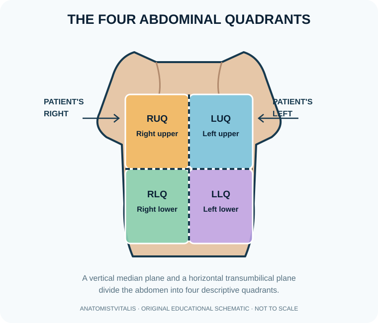
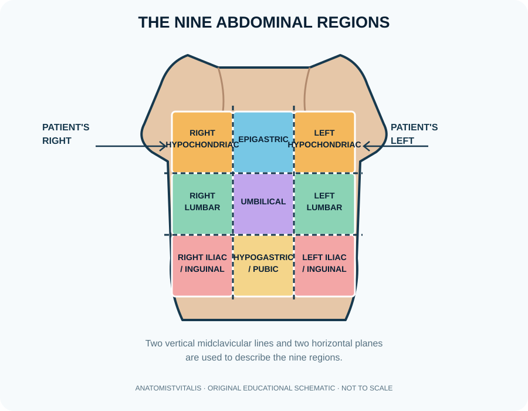

Abdominal quadrants, nine regions, anatomical lines and surface landmarks
Surface anatomy relates internal structures to visible or palpable landmarks on the body. The abdomen is commonly mapped using four quadrants for rapid clinical communication or nine regions for more precise topographic description. Anatomical lines are reference lines projected on the body surface; they help describe location and guide examination, imaging and procedures. These maps are guides, not rigid borders for organs, whose positions vary with posture, breathing, body habitus and disease.
Illustration 1: The four abdominal quadrants
The vertical median plane and horizontal transumbilical plane divide the abdomen into four quadrants. Remember that the patient's right is shown on the viewer's left in this front-facing diagram.

Illustration 2: The nine abdominal regions
The nine-region scheme uses two vertical midclavicular lines and two horizontal reference planes. The diagram is a surface-anatomy learning aid; organ boundaries do not exactly follow the grid.

Learning objectives
- Distinguish the four-quadrant and nine-region systems for describing the abdomen.
- Identify the principal surface lines used to construct abdominal regions.
- Use the systems to communicate pain, examination findings and organ location without implying rigid organ boundaries.
High-yield study points
- The four quadrants are right upper (RUQ), left upper (LUQ), right lower (RLQ) and left lower (LLQ), divided by vertical and horizontal planes through the umbilicus in the conventional scheme.
- The nine regions are right hypochondriac, epigastric, left hypochondriac; right lumbar, umbilical, left lumbar; right iliac/inguinal, hypogastric/pubic, and left iliac/inguinal.
- The midclavicular lines descend from the midpoint of each clavicle and are used with the subcostal and transtubercular planes to map the nine abdominal regions.
- The median plane runs through the midline; parasternal lines lie near the sternum; anterior, mid- and posterior axillary lines describe surface positions along the lateral thorax.
- The sternal angle is a useful landmark near the second costal cartilage and the approximate T4/T5 thoracic plane; the xiphisternal joint and costal margin help orient the lower thorax.
- The iliac crests, anterior superior iliac spines, pubic symphysis, umbilicus, spinous processes and palpable ribs are common surface landmarks.
- The McBurney point is a traditional surface landmark associated with the base of the appendix, but appendix position varies and the point is not a definitive diagnostic test.
- Describe a landmark with side and relation, such as 'approximately 2 cm inferior to the right costal margin in the midclavicular line', rather than using an isolated vague label.
Clinical connection
Quadrants and regions help communicate pain and examination findings, but referred pain, organ variation and overlapping pathology mean that location alone cannot confirm the cause.
Check your understanding
- Which two planes commonly divide the abdomen into four quadrants?
Reveal answer
A vertical median plane and a horizontal transumbilical plane are commonly used clinically.
- Name the nine abdominal regions from the upper row.
Reveal answer
Right hypochondriac, epigastric and left hypochondriac.
- Does pain in a named abdominal region prove that the affected organ lies entirely within that region?
Reveal answer
No. Regions are clinical orientation tools; organs may cross boundaries and pain may be referred.